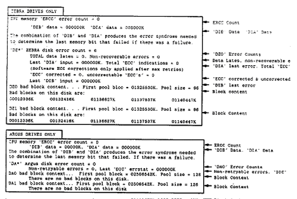

Use <Control S> to stop screen from scrolling.
Use <Control Q> to start screen scrolling again. See Illustration 1.
The STATESREP.TM file is located in Directory DZ0 at R level. This file tracks “ON-LINE" disk drive STATUS and ECC errors. It is useful for finding the following:
New Bad Blocks.
Intermittent Disk Drive Errors.
This file is updated every time DOWN is typed.
To access STATE$REP.TM, from R level of Directory DZ0 type: STATE$REP.TM <CR>.
The following illustration shows the typical error printout and provides information to aid in decoding such printouts.
Illustration 1: Viewing STATE$REP.TM Output
